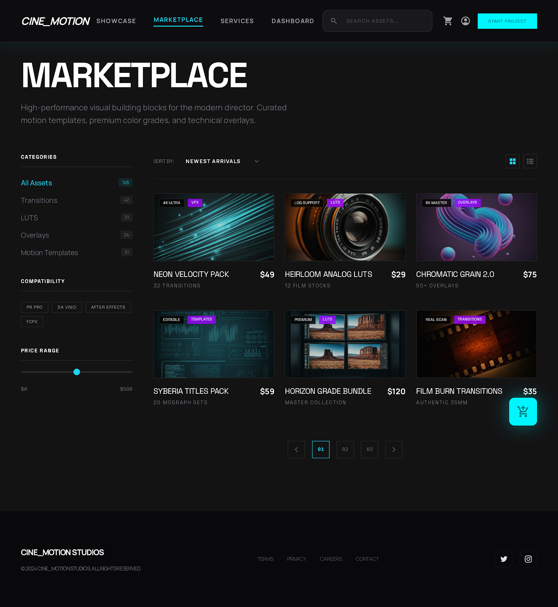
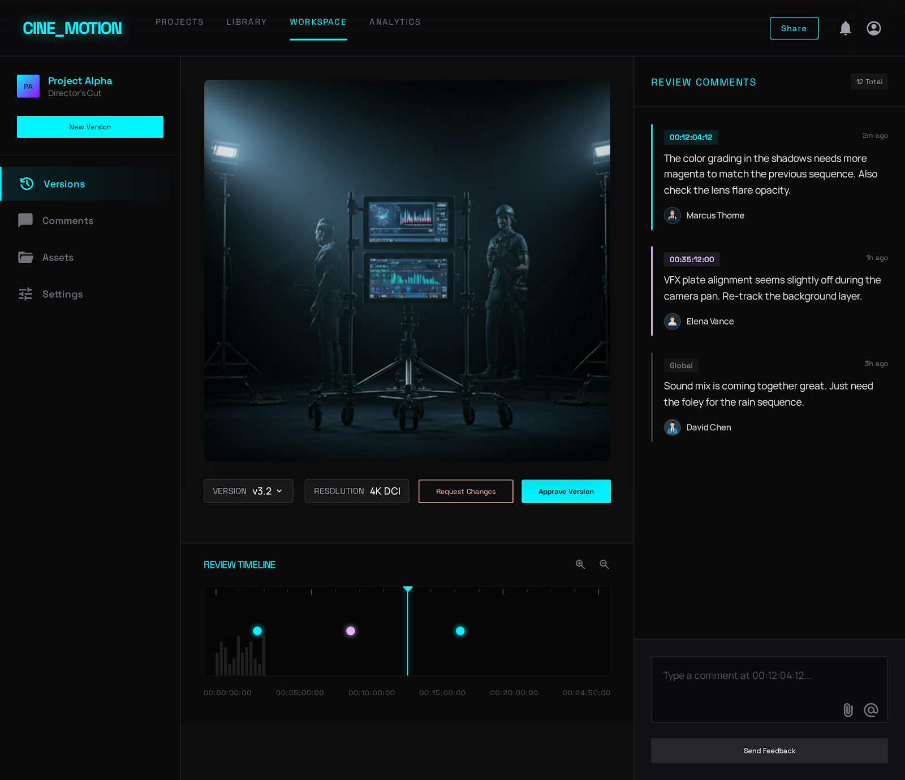
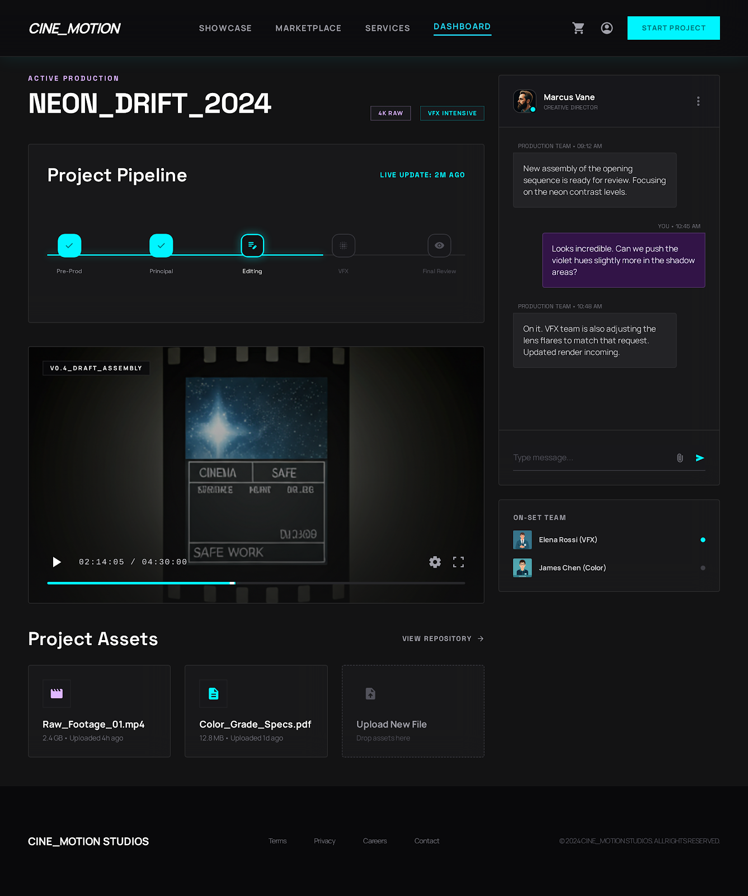
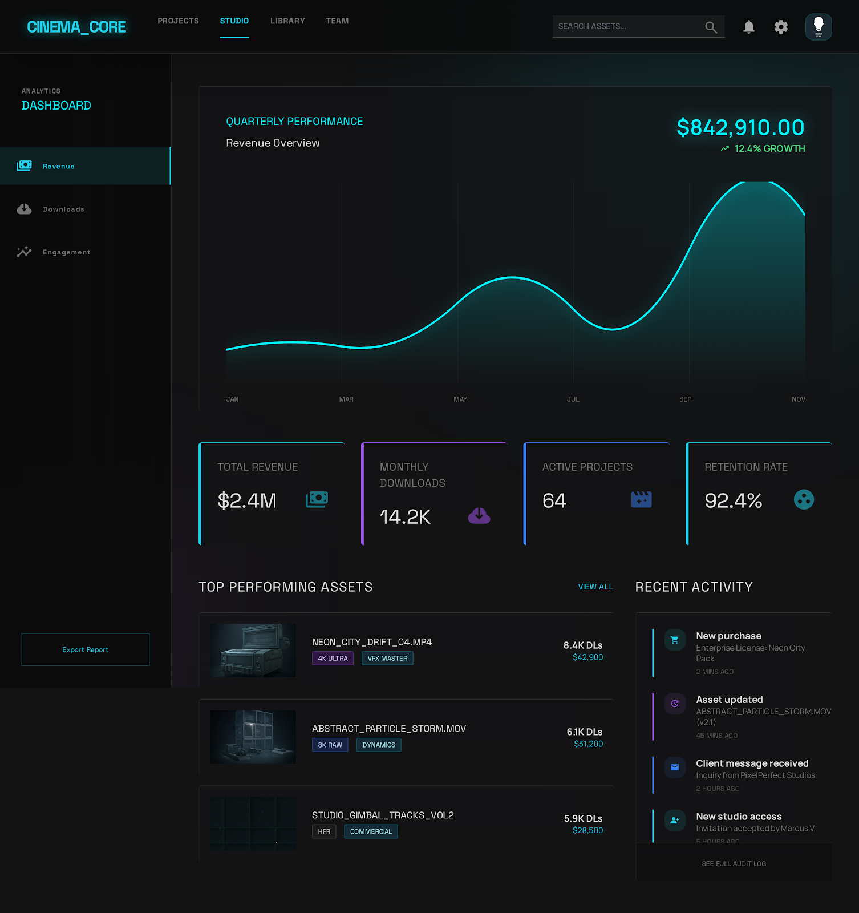
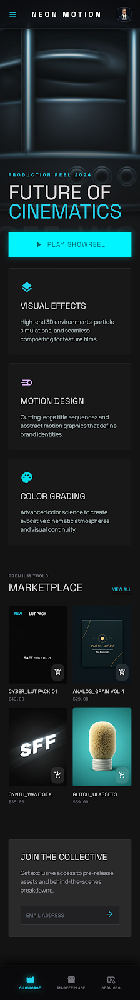
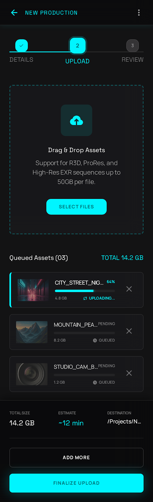
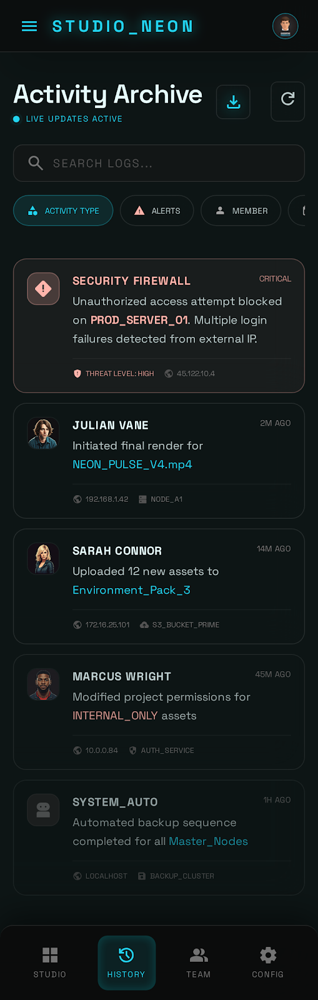

Marketplace intelligence
Browse premium packs with license metadata, creator context, and production-ready previews.
Premium motion asset hub
A theater-dark command center for licensing cinematic assets, reviewing client work, and tracking every studio handoff from brief to delivery.

Built for producers, directors, motion designers, agencies, and post teams.
One studio surface
Browse premium packs with license metadata, creator context, and production-ready previews.
Keep review comments, asset versions, approvals, and handoff notes in one clean workspace.
Track billing, permissions, activity logs, libraries, and team access without leaving the hub.
Production flow
Stitch brings the high-friction parts of motion production into a single operating layer: assets are found, purchased, reviewed, revised, and archived with the surrounding context intact.
Search by format, mood, package, license, and creator.
Approve or request changes while the team sees the same source of truth.
Keep invoices, asset history, and activity logs tied to the final delivery.


Interface system

Mobile ready
Mobile screens keep uploads, reviews, activity, and dashboard signals available during shoots, client calls, and travel days.



Studio access
Stitch is designed for teams that need premium assets, clear client review, and operational visibility in one cinematic workspace.
Request access